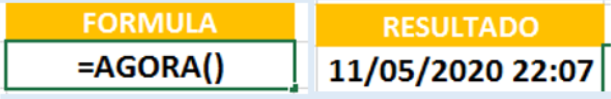

11 Fórmulas mais usadas no excel
O Excel é um programa muito utilizado por grandes e pequenas empresas e até mesmo no dia a dia das pessoas comuns.
Com o Excel, podemos usar para armazenar e organizar muitos conjuntos de dados. Usando seus diversos recursos e fórmulas, você também pode usar a ferramenta para entender seus dados.
Por exemplo, você pode usar uma planilha para rastrear dados e ver automaticamente as somas, médias, totais e diversas outras regras estabelecidas por você.
Uma das melhores maneiras de se Aprender Excel, é praticando todos dias, estabelecendo uma meta por dia, assim, você irá aprender uma formula ou dica do Excel a cada dia, se você fizer isso durante um mês você aprenderá 30 dicas ou formulas fantástica do Excel, mas pra isso você precisa colocar em prática e ter um ótimo conteúdo para aprofundar seus conhecimentos.
Para isso, iremos compartilhar as melhores dicas para você ficar preparado e qualificado para o mercado de trabalho.
- DICA: Diferenças Entre Dias.
- 06/05/2020 a 04/01/2021 = Quantos dias existem entre essas duas datas.
- DICA: Quantas Semanas entre as Datas Abaixo;
- 01/05/2020 a 01/06/2020 = Quantas semanas existe entre essas duas datas.
- DICA: Quantos MÊS entre as Datas Abaixo;
- 01/05/2020 a 01/05/2021 = Quantos MÊS existem entre essas datas:
- DICA: Quantos ANOS uma PESSOA tem;
- 01/05/2020 a 01/05/2021 = Aqui, mostra quantos anos você tem, como também pode ser utilizada para demostrar quanto tempo de serviço você tem em uma determinada empresa, ou seja, pode-se criar várias situações.
- DICA: Iremos demostrar para você 3 FORMULAS que dificilmente vemos, mas é de suma importância para o nosso aprendizado:
- 04/01/1987 a 11/05/2020 = usamos essas datas para criar uma formula que demostrará a IDADE, MÊS e DIA que a pessoa está até a data atual. Segue abaixo a ilustração da tabela com as respectivas datas, Inicial e Data Atual.
- DICA: Para dá continuidade no passo acima, iremos incrementar ainda mais essa tabela de idade:
- 04/01/1987 a 11/05/2020 = utilizando essa mesma data para incrementar as formulas citada acima, agora digamos que seu chefe lhe pediu para você criar uma formula que gere automaticamente as respectivas datas (idade, mês e dia) da pessoa em UMA CÉLULA, ou seja, o chefe quer que você deixe automático, de acordo com que for entrando pessoa na tabela, para mostrar: 33 anos, 4 meses e 7 dias, isso de maneira automática para cada pessoa.
- DICA: Uma função muito simples, mas indispensável na rotina do dia a dia, chama-se AGORA, ela lhe dá DIA e HORAS em Tempo Real. Veja abaixo: 
- DICA: Função CONCAT/CONCATENATE, Unir Texto.
- Servira para UNIR TEXTOS, que estão em células diferentes.
- DICA: Função NÚM.CARACT, contar quantidade de caracteres.
- Você aprenderá CONTAR o total de CARACTERES em uma CÉLULA. O conhecimento adquirido neste tutorial é uma boa base para a solução criativa de problemas do Excel.
- DICA: Função NÚM.CARACT, contar quantidade de caracteres SEM O ESPAÇO:
- Usando o mesmo raciocínio da anterior, aqui você aprenderá contar o total de caracteres em uma célula SEM O ESPAÇO.
- DICA: Função que conta a quantidade de VEZ que o caractere APARECE:
- Para CONTAR quantas vezes um CARACTERE específico aparece em uma CÉLULA, você pode usar uma fórmula baseada nas funções. Funcionará para qualquer caractere de texto e como também pode ser usada para contar as letras Maiúsculas e Minúsculas e com acento e sem acento de palavras específicas em uma determinada célula.
Digamos que você está em uma tabela no Excel e quer saber qual a fórmula que conta quantos dias falta da DATA ATUAL até uma DATA FINAL, por exemplo:
Conclusão: você talvez está se perguntando qual a utilidade da letra “D“, então a letra inserida, significa Dias, ou seja, ela é o pulo do gato para complementar a função DATADIF.
Conclusão: Foi realizado a diferença de semanas do 01/05/2020 a 01/06/2020, com base na formula, foi detectado 4 semanas e alguns dias. Observe que foi utilizado a mesma formula da Diferença de dias, mas com uma alteração a mais, ou seja, foi utilizado uma barra com o número 7, referente a 7 dias igual a uma semana.
Importante: Após executar a formula você precisará converter o resultado em número, clique em cima da célula do resultado: Com Botão Direito do Mouse, Formatar Células, Número e dá OK. Com isso o resultado consistirá em 4 semanas e alguns dias, como mostra a imagem acima.
Conclusão: Essa formula conta a quantidade de MÊS existente naquele período, usamos como exemplo, 01/05/2020 a 01/05/2021, onde o resultado detectado foi 12 meses. Na formula como mostra acima, foi inserido a letra “M” indicando mês.
Conclusão: Utilizamos a letra “Y” para representar a quantidade de ano que uma determinada pessoa tem até o momento atul ou até mesmo quanto tempo de serviço uma pessoa está naquela empresa, usamos como exemplo 01/05/2020 a 01/05/2021, o resultado foi de 1 (um) ano de idade, como mostra o resultado acima.
Conclusão: Fizemos acima 3 formulas muito importante para quem quer se destacar em EXCEL, são formulas que você pode criar e automatizar sua planilha, onde a mesma, gera a IDADE da pessoa, MESES e DIAS que a mesma tem até a data atual. Vemos acima que na PRIMEIRA FÓRMULA (vermelho), usamos a letra “y” para representar o ano, na SEGUNDA FÓRMULA (amarelo), utilizamos as letras que representa mês e na TERCEIRA FÓRMULA (roso) usamos as letras “md” que representa dia, sendo que a determinada pessoa tem 33 anos, 4 meses e 7 dias, até a data atual.
Conclusão: Observe acima que fizemos uma formula muito útil, que servirá para você ganhar tempo e deixar sua tabela otimizada e profissional. Veja que pegamos a formula criada anteriormente e fizemos algumas alterações como: & “ ANOS “, esta alteração significa que o & (i comercial) para JUNTAR NOMES por extenso em uma única célula e “ ANOS “ usamos para APARECER NA ESCRITA, juntamente com esse espaço que demos entre a aspas e o nome anos para separar 33 de anos..., então, ficará assim: 33 anos, 4 meses e 7 dias (em uma única célula), como mostra acima. A função DATADIF é um pouco grande, mas uma vez criada, será muito importante no seu dia a dia, virmos acima vários exemplos trabalhado com datas, fazendo com que sua tabela fique automatizada.
Conclusão: A função AGORA é muito utilizada para gerar datas e horas automática, fazendo com que fique sempre atualizada, de acordo com a horas do sistema, como mostra acima.
Conclusão: Concatenate, uma das funções de texto que serve para unir duas ou mais sequências de texto em uma mesma sequência ou célula. Veja que usamos INFORMATICA DO ZERO, em células diferentes para unir apenas em uma, pegamos na célula J8 e L8, observe que inserimos 2 aspas com espaço para separar a palavra da outra.
Conclusão: Você aprendeu como usar a Função =NÚM.CARACT, que serve para contar a quantidade de caracteres que tem dentro da célula. Observe que a função conta todos os caracteres, a frase “Informática do Zero” tem 17 caracteres, ou seja, 17 letras, mas você deve ter achado estranho o resultado 19, pois é, a função considera caracteres até os espaços, um total 19.
Conclusão: Veja a importância dessa formula, conta a quantidade de caracteres sem o espaço. A grande sacada dessa formula são essas ASPAS: as 2 primeiras aspas COM ESPAÇO se referem ao espaço que tem na frase, já nas 2 últimas ASPAS SEM ESPAÇO referem-se que, está SUBSTITUÍNDO a anterior, com espaço. Fazendo esse passo a passo você consegue progredir em sua planilha do Excel.
Conclusão: Como mostra a imagem acima, usemos a função NÚM.CARACT aninhada com a função SUBSTITUIR. A função criada acima no Excel, está contando o número de caracteres presentes na célula B39 e subtraindo o resultado pelo número de caracteres que estão substituindo a letra “O” por nenhum valor, enfim, no exemplo 1 está contanto a quantidade de “O” maiúsculos e no exemplo 2, a quantidade de “Á” maiúsculo com acento. E por fim o resultado de O maiúsculo é 3 e de Á maiúsculo 1, assim, pose-se fazer com quaisquer caracteres.
Assuntos Relacionados